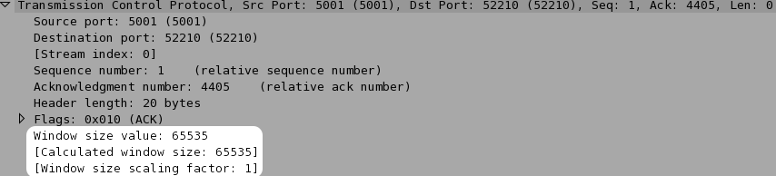
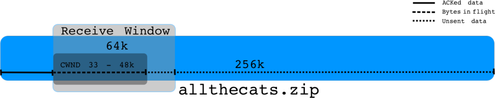
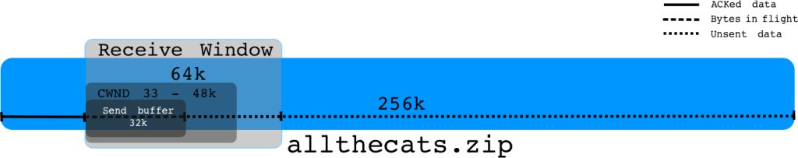

吞吐量和tcp窗口是啥？
Contents
本文翻译自 https://packetbomb.com/understanding-throughput-and-tcp-windows/
吞吐量就是单位时间内能传输的数据（也就是每秒传输的bits或者bytes）。如果能在越短的时间，传输越多的数据，显然吞吐量就越大。
下图是一段数据流，每个点是个包：
当我们传输数据时，我们到底能够传送多少，由下面两个因素决定：
- 接受方声明它能收多少数据
- 发送方能发多少数据
接收窗口
接收窗口是接收方告诉发送方，目前我能收多少数据，我的缓冲区（buffer）是多大。这表示的是接收方 socket (SO_RCVBUF) 剩余的空间。
所以对于一个数据流，从接受方的角度看，能收多少数据如下图所示：
看起来就是这么一回事对吧。
这个用来建议发送发设置的接收缓冲区剩余空间的大小，在每个ack包里面，表示为Window Size.

发送窗口
发送方能够发送的数据量，则更为复杂。它的上限是接收窗口大小，发送端不能发送比接收窗口更大的数据，不然就会被丢包。其他影响因素包括：
- 已经传输的，尚未被ack的数据，也就是在途直接数（ bytes in the flight）
- 拥塞窗口 The congestion window (cwnd)
- 发送方的缓冲区 (SO_SNDBUF) 大小
在途直接数（bytes in the flight）
在途字节数，是指已经发送的，尚未被ack的数据。
如果接收窗口是64k，我们已经发送了48k 数据尚未被ack，那么我们只能最多再发送16k数据。一旦我们收到了ack包，更新了窗口大小，那么我们才能发送更多的数据。
拥塞窗口 （Congestion Window）
拥塞窗口 congestion window (cwnd)，是发送端流控算法根据当前网络容量和状况所确定的。它通常是mss的倍数。如果mss是1460，cwnd是33的话，那么就是1460*33 ~ 48K 左右。
cwnd在传输一开始，一般是2,3 到10的左右，不同系统和内核版本各不相同。 cwnd会通过tcp慢启动而慢慢变大。tcp慢启动可以看这篇文章（https://packetlife.net/blog/2011/jul/5/tcp-slow-start/）。一旦cwnd到达慢启动阈值(ssthresh)，或者开始由于拥塞导致丢包了，cwnd就会根据拥塞算法开始变化。
最终，拥塞窗口会增大到一个极限值，这个极限值，是由网络拥塞到达的限制和接收端窗口的限制两者较小值来确定。即使接受端窗口是64k，但是发送窗口还是被cwnd所限制。可能是当前网络状况，不支持一下子发送64k的数据。（可以想，用一根水管往一个大缸里面注水，大缸的容量很大，但是管子很细。）
所以我们说，发送端能发多少数据，由rwnd和cwnd两者的较小值来决定。

发送方缓冲区 Send Buffer
发送方缓冲区 (Send buffer) 就是发送端socket缓冲区大小。这个缓冲区，就是应用写多少数据让tcp去发送。如果应用不设置一个大小，那么就是用默认值。发送方缓冲区 (send buffer) 大小的最佳值，由带宽，延迟等来确定带宽时延积（BDP）。msdn是这么说的：
When sending data over a TCP connection using Windows sockets, it is important to keep a sufficient amount of data outstanding (sent but not acknowledged yet) in TCP in order to achieve the highest throughput. The ideal value for the amount of data outstanding to achieve the best throughput for the TCP connection is called the ideal send backlog (ISB) size. The ISB value is a function of the bandwidth-delay product of the TCP connection and the receiver’s advertised receive window (and partly the amount of congestion in the network).
下面是最重要的一部分：
Applications that perform one blocking or non-blocking send request at a time typically rely on internal send buffering by Winsock to achieve decent throughput. The send buffer limit for a given connection is controlled by the SO_SNDBUF socket option. For the blocking and non-blocking send method,* **the send buffer limit determines how much data is kept outstanding in TCP**. If the ISB value for the connection is larger than the send buffer limit, then the throughput achieved on the connection will not be optimal.
|
|
举个例子：
带宽是20Mbps ， 往返时延 round trip time (rtt) 时间是 40ms， BDP（带宽时延积）就是 20000000/8 * 0.04 = 100k。所以100K就是网络中一次能够传输数据的最大值。

如果接收窗口是64k，cwnd是48k，但是send buffer是32k，我们就不能写满发送窗口48k。这个场景下，我们吞吐量就是被send buffer 大小所限制了。
总结
发送的吞吐量受到诸多因素的限制。
- 发送方不能发送比接收窗口更多的数据
- 发送方不能发送比拥塞窗口更多的数据
- 发送方不能发送比自己发送缓冲区更多的数据
我们还没讨论延迟。延迟越小，这些因素影响越小；延迟越大，这些因素的影响就越大。 往返时延(round trip time) 也会极大的影响性能。
Author smasterfree
LastMod 2020-10-25